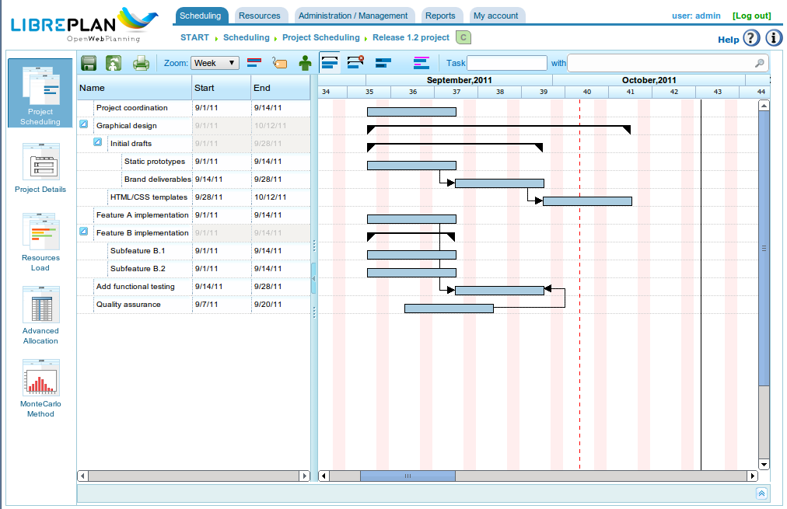

任務規劃
任務規劃
LibrePlan 中的規劃是貫穿整個使用者指南描述的過程，其中關於專案和資源分配的章節尤為重要。本章描述在專案和甘特圖正確設定後的基本規劃程序。

工作規劃檢視
與公司概覽一樣，專案規劃檢視根據正在分析的資訊分為幾個檢視。特定專案可用的檢視包括：
- 規劃檢視
- 資源負載檢視
- 專案清單檢視
- 進階分配檢視
規劃檢視
規劃檢視結合了三種不同的角度：
- 專案規劃： 專案規劃以甘特圖形式顯示在程式的右上方。此檢視允許使用者臨時移動任務、在任務之間指定相依性、定義里程碑以及建立限制。
- 資源負載： 資源負載檢視位於畫面右下方，根據分配顯示資源可用性，而非任務的分配情況。此檢視中顯示的資訊如下：
- 紫色區域： 表示資源負載低於其容量的 100%。
- 綠色區域： 表示由於資源被規劃用於另一個專案，資源負載低於 100%。
- 橙色區域： 表示由於目前專案，資源負載超過 100%。
- 黃色區域： 表示由於其他專案，資源負載超過 100%。
- 圖表檢視和實獲值指標： 可以從「實獲值」索引標籤查看。產生的圖表基於實獲值技術，指標針對專案的每個工作日計算。計算的指標包括：
- BCWS（計劃工作的預算成本）： 截至某日期的計劃工時數的累積時間函數。在任務的計劃開始時為 0，在結束時等於計劃工時總數。與所有累積圖表一樣，它將始終增加。任務的函數是截至計算日期每日分配的總和。此函數在所有時間都有值，前提是已分配資源。
- ACWP（已執行工作的實際成本）： 截至某日期工作報告中報告工時的累積時間函數。此函數在任務的第一份工作報告日期之前只有 0 的值，隨著時間流逝和工作報告工時的增加，其值將繼續增加。在最後一份工作報告日期之後沒有值。
- BCWP（已執行工作的預算成本）： 包含將任務進度乘以估計完成任務所需工作量的結果值的累積時間函數。隨著時間流逝，此函數的值增加，進度值也增加。進度乘以所有任務的估計工時總數。BCWP 值是正在計算的任務的值的總和。進度在設定時被彙總。
- CV（成本差異）： CV = BCWP - ACWP
- SV（排程差異）： SV = BCWP - BCWS
- BAC（完工預算）： BAC = max (BCWS)
- EAC（完工估算）： EAC = (ACWP / BCWP) * BAC
- VAC（完工差異）： VAC = BAC - EAC
- ETC（完工尚需估算）： ETC = EAC - ACWP
- CPI（成本績效指數）： CPI = BCWP / ACWP
- SPI（排程績效指數）： SPI = BCWP / BCWS
在專案規劃檢視中，使用者可以執行以下操作：
- 分配相依性： 在任務上按右鍵，選擇「新增相依性」，然後將滑鼠指標拖曳到應分配相依性的任務。
- 要更改相依性類型，在相依性上按右鍵並選擇所需的類型。
- 建立新里程碑： 點擊要在其之前新增里程碑的任務，然後選擇「新增里程碑」選項。里程碑可以透過用滑鼠指標選擇里程碑並將其拖曳到所需位置來移動。
- 在不干擾相依性的情況下移動任務： 在任務主體上按右鍵並將其拖曳到所需位置。如果沒有限制或相依性被違反，系統將更新資源對任務的每日分配，並將任務放置在選定的日期。
- 分配限制： 點擊相關任務並選擇「任務屬性」選項。將出現一個帶有可修改的「限制」欄位的彈出視窗。限制可能與相依性衝突，這就是為什麼每個專案都指定相依性是否優先於限制。可以建立的限制包括：
- 儘早開始： 表示任務必須儘快開始。
- 不早於： 表示任務不得在某個日期之前開始。
- 在特定日期開始： 表示任務必須在特定日期開始。
規劃檢視還提供幾個作為查看選項的程序：
- 縮放等級： 使用者可以選擇所需的縮放等級。有幾個縮放等級：年度、四個月、月度、每週和每日。
- 搜尋篩選器： 使用者可以根據標籤或標準篩選任務。
- 關鍵路徑： 由於使用 Dijkstra 演算法計算圖上的路徑，關鍵路徑被實現。可以透過點擊查看選項中的「關鍵路徑」按鈕來查看。
- 顯示標籤： 使使用者能夠查看分配給專案中任務的標籤，可以在螢幕上查看或列印。
- 顯示資源： 使使用者能夠查看分配給專案中任務的資源，可以在螢幕上查看或列印。
- 列印： 使使用者能夠列印正在查看的甘特圖。
資源負載檢視
資源負載檢視提供資源清單，其中包含產生工作量的任務或標準的清單。每個任務或標準都以甘特圖形式顯示，以便可以看到負載的開始和結束日期。根據資源的負載是高於還是低於 100% 顯示不同的顏色：
- 綠色： 負載低於 100%
- 橙色： 100% 負載
- 紅色： 負載超過 100%

特定專案的資源負載檢視
如果將滑鼠指標放在資源的甘特圖上，將顯示員工的負載百分比。
專案清單檢視
專案清單檢視允許使用者存取專案編輯和刪除選項。請參閱「專案」章節以了解更多資訊。
進階分配檢視
進階分配檢視在「資源分配」章節中詳細說明。